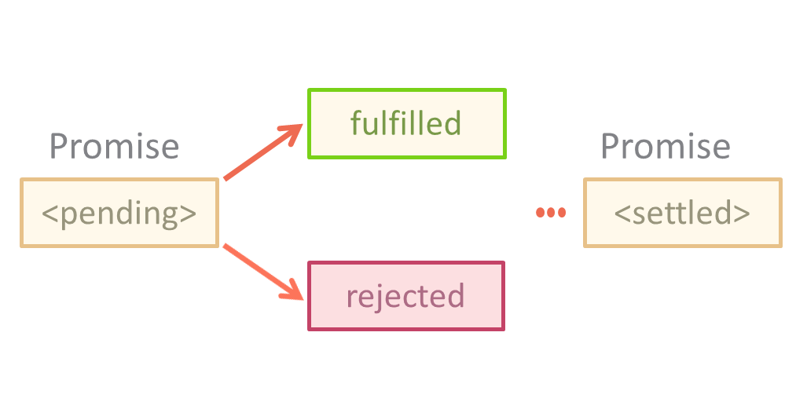

Promise provides a convenient way to organize asynchronous code.
Promise is a special object that contains its state. At first it is in pending ("waiting") state, then in fulfilled ("executed successfully") or rejected ("executed with an error") state. here is a term describing the state set (settled), this is the state when the promise is fulfilled or rejected, but is not in a waiting state.
new Promise(executor);
new Promise(function(resolve, reject) { ... });
executor is a function object with two resolve and reject arguments. The first argument causes successful fulfillment of the promise, the second rejects it. We can call these functions after the completion of our operation.
You can hang a callback of two types on the promise
The method of use is as follows:
Example of creating Promise:
var promise = new Promise(function(resolve, reject) {
setTimeout(() => {
// will translate the promise into the "fulfilled" state with the result "Promise value"
resolve("Promise value");
}, 1000);
})
console.log(1); // some code for execution that is not related to promise
// A universal method for hanging handlers
promise.then(
onFulfilled, // onFulfilled is a function that will be called with the result at resolve.
onRejected // оnRejected is a function that will be called with an error when reject.
);
function onFulfilled(result) {
alert("Fulfilled: " + result);
}
function onRejected(error) {
alert("Rejected: " + error);
}
You can assign both the handler directly, and only one:
promise.then(onFulfilled);
promise.then(null, onRejected);
// we can use .catch instead of .then (null, onRejected)
promise.catch(onRejected);
If a synchronous throw (or other error) occurs in the promise function, then the reject is called:
let promise = new Promise((resolve, reject) => {
throw new Error("There's been an error!!!");
})
promise.catch(alert);
If a problem occurs during the execution, reject is called not with a string, but with an error object of type new Error:
Chaining allows you to build asynchronous chains of promises.
var promise = new Promise(function(resolve, reject) {
resolve(1);
})
promise
.then(a => a + 2)
.then(b => b + 5)
.then(alert)
.catch(err => {
alert("error:" + err);
});
If we want to implement several asynchronous processes simultaneously and process their result in the Promise class, there are the following static methods.
function sqrt(x) {
return new Promise((resolve, reject) => {
if (x >= 0) {
let result = Math.sqrt(x);
resolve(result);
}
else {
reject(new Error("Error: the value is negative!!!"));
}
})
}
Promise.all([
sqrt(9),
sqrt(15)
])
.then(results => {
alert(results);
});
let vars = [
9,
15
];
Promise.all(vars.map(sqrt))
.then(results => {
alert(results);
});
The Promise.resolve (value) call creates a successfully executed promise with the result value.
Promise.resolve(value) similar to new Promise((resolve) => resolve(value))
Promise.resolve(45)
.then(sqrt)
.then(alert);
Promise.resolve is used when you want to build an asynchronous chain, and the initial result is already there.
Promise.reject (error) creates an already executed promise, but not with a successful result, but with an error error.
Promise.reject(error) similar to new Promise((null, reject) => reject(error))
The Promise.reject method is used very rarely, much less often than resolve, because the error usually occurs not at the beginning of the chain, but in the process of its execution.
The promises have some limitations. In particular, the standard does not provide for any method for "cancellation" of promise, although in some situations (http-requests) this would be quite convenient.